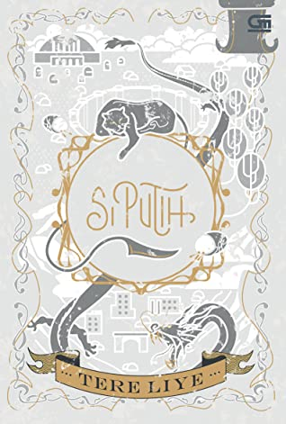

Ditulis oleh Hasna Mufidah Sa'diyah pada tanggal 7 November 2021
Judul Buku: Si Putih
Penulis: Tere Liye
Co-Author: Diena Yashinta
Penerbit: Penerbit Gramedia Pustaka Utama
Tahun Terbit: 2021
Jumlah halaman: 376 hlm; 20 cm
ISBN: 9786020652252
Buku ini adalah buku ke-10 dari serial Bumi
Buku ini menceritakan tentang masa lalu si Putih, kucing kesayangan Raib, sebelum akhirnya kucing itu diletakkan di depan pintu rumah sebagai hadiah ulang tahun Raib.
Cerita ini bermula di Klan Polaris. Sebuah klan yang unik di konstelasi Ursa. Pada suatu hari, klan Polaris mengalami pandemi penularan virus mematikan. Virus itu lompat menyerang manusia dan menular dengan cepat. Kapsul-kapsul kesehatan kewalahan menangani gelombang pandemi tersebut. Penguasa klan Polaris mengeluarkan Dekrit Darurat. Klan Polaris terdiri dari dua bagian. Satu bagian diisi penduduk klan Polaris, satu bagian yang lainnya dibiarkan kosong. Maka, saat Dekrit Darurat dikeluarkan, penduduk klan Polaris yang sehat harus pindah ke bagian yang kosong tersebut dan memulai kehidupan yang baru.
N-ou, seorang anak lelaki 12 tahun, terpisah dengan kedua orang tuanya, karena saat dalam perjalanan menuju lorong evakuasi, N-ou sudah terinfeksi virus tanpa ia sadari. N-ou menyadari dirinya sudah terinfeksi virus saat tiba di pos pemeriksaan sehingga ia tidak bisa ikut orang tuanya masuk ke lorong evakuasi yang menuju Polaris Baru.
N-ou kemudian kembali ke kota tempat tinggalnya, Kota E-um, kota terbesar nomor dua di Klan Polaris, dengan tubuhnya yang sakit karena virus di dalam tubuhnya yang mulai menyerang setiap sel inangnya. Ketika N-ou berteduh di dalam bangunan tua yang rusak akibat kerusuhan saat pengevakuasian penduduk yang sehat, ia menemukan seekor kucing putih yang terjepit salah satu bongkahan material gedung yang berserakan. Dengan sisa kesadaran dan tenaga, N-ou memanfaatkan pipa besi dari bagian dinding gedung yang runtuh, sebagai pengungkit untuk mendorong batu. Akhirnya, batu itu terangkat dan kucing itu segera lompat membebaskan diri sementara N-ou langsung terjatuh dan kehilangan kesadaran.
Selama N-ou tidak sadarkan diri, kucing putih itu terus menemaninya. Malamnya, ketika tubuh N-ou menggigil dan demam, kucing putih itu membawakannya selimut. Juga ketika N-ou merasa haus, kucing itu menuangkan air minum segar ke mulut N-ou, dengan cara melilitkan botol air minum dengan ekornya yang panjang. Kucing putih itu juga membawakan N-ou makanan keesokan harinya. N-ou berterimakasih kepada kucing itu. Kemudian, N-ou memanggil kucing putih itu dengan nama si Putih.
N-ou dan si Putih berkeliling kota E-um yang kosong dengan kapsul terbang yang mereka temukan dan mencari pintu lorong evakuasi yang menuju Polaris Baru. Selama lima tahun, N-ou berkali-kali memeriksa seluruh dinding yang membatasi kota E-um dengan Polaris Baru, tetapi hasilnya nihil. Mereka tidak menemukan pintu atau celah yang menuju Polaris Baru. N-ou, yang kini telah menginjak usia 17 tahun, memutuskan untuk bertualang ke tempat lain bersama si Putih, kucing putih yang kini sudah menjadi kucing dewasa. Klan Polaris sangat luas, banyak tempat yang bisa dia datangi. Boleh jadi dia akan menemukan kehidupan lain.
Dengan menaiki kapsul terbangnya yang ia beri nama Paruh Perak, N-ou dan si Putih bertualang meninggalkan kota E-um. Di petualangannya ini, N-ou bertemu Pak Tua bernama Br-ham yang usianya hampir 100 tahun dan menjadi teman bertualang N-ou yang baru. Selain itu, N-ou juga mengetahui bahwa dirinya dan si Putih mempunyai kekuatan bertarung. Bersama si Putih dan Pak Tua, N-ou berpetualang mengelilingi klan Polaris, mengunjungi kota-kota tanpa teknologi yang dikuasai oleh pengendali hewan, dan menyaksikan berbagai kejadian yang unik dan mendebarkan.
Selama N-ou bertualang menjungi tempat-tempat di Klan Polaris, kekuatannya berkembang secara bertahap. Salah satu petarung hebat dunia paralel siap terlahirkan. Dan si Putih bukanlah hewan sembarangan. Si Putih adalah hewan kuno dari dunia paralel yang lahir di peradaban panjang Klan Polaris yang selalu dihantam pandemi.
Di buku ke-10 dari serial Bumi ini, banyak karakter baru yang belum pernah kita jumpai di sembilan buku sebelumnya. Di sembilan buku sebelumnya, kita disuguhi petualangan Raib, Seli, dan Ali. Akan tetapi, di buku ke-10 ini, kita diajak berpetualang bersama Si Putih, N-ou, dan Pak Tua di sebuah klan yang belum pernah kita jumpai di buku-buku sebelumnya. Hal menarik lainnya adalah novel ini membahas tentang pandemi yang juga terjadi di Bumi, dan juga keistimewaan N-ou yang bisa berkomunikasi dengan Si Putih.
Salah satu kutipan kalimat terbaik menurut saya dari novel Si Putih ini, yaitu:
“Teknologi tidak merusak apapun, Pak Tua. Itu hanya alat. Seperti kebanyakan alat, tergantung manusia yang menggunakannya. Bisa untuk kebaikan, atau bisa sebaliknya untuk keburukan."
Apakah N-ou masih memiliki harapan agar bisa masuk ke lorong Klan Polaris kedua dan bertemu lagi dengan kedua orangtuanya? Selengkapnya ada di buku Si Putih. Dan, buku ini belum tamat. Masih ada kelanjutannya :D
Happy reading!